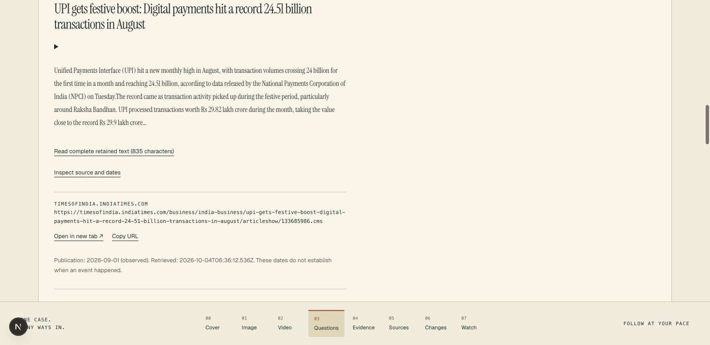

Did UPI pass 24 billion transactions in August 2026?
The app retrieved reporting with an August figure of
24.51 billion.
The retained Times of India passage attributes its figures to NPCI. That attribution can be inspected; the app did not retain NPCI’s original statistics page in this run.
Page published1 September 2026
Evidence retrieved4 October 2026
The broader growth question remains open. Finding a source is the start of checking it.
Open the original reporting ↗